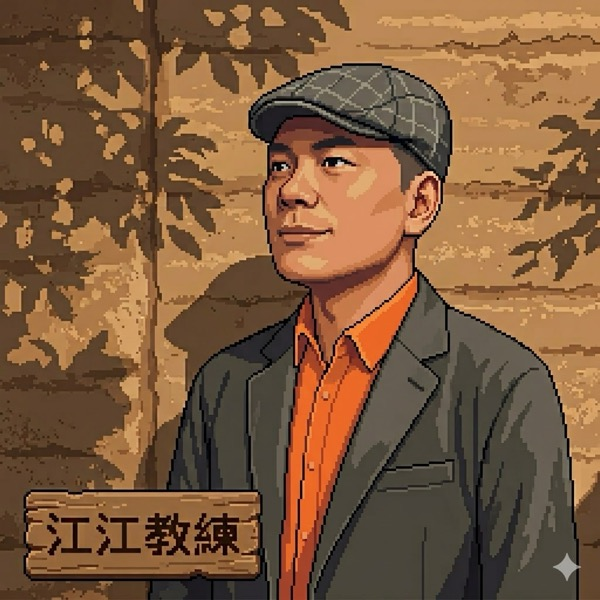
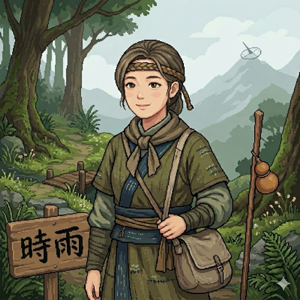
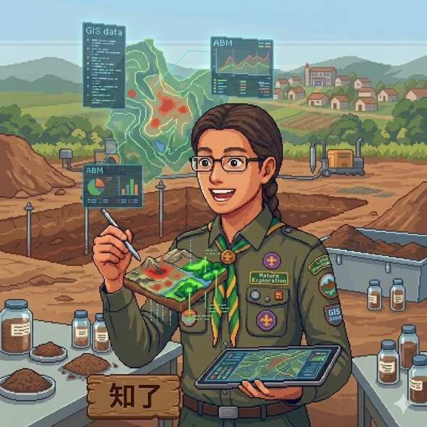
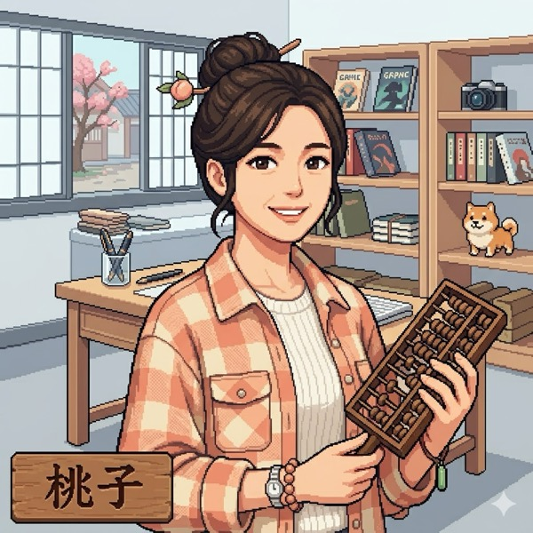

What This Article Covers
Designing Agents does not require writing code. If you can lead people and design workflows, you are already at the starting line. This article traces the path from "docs as system design" all the way to nested Agents, filling in the most critical step along the way: how to use persona-mind distillation to build a character that can make its own judgments, and then how a single Agent scales into a multi-Agent system.
- In the age of AI, a clear document can be a fully functioning system.
- For a character to become an Agent, the key is having a cognitive layer, a thinking engine that can judge new problems it has never seen before.
- Many small Agents together form a multi-Agent system. If the whole environment has a shared goal and a convergence mechanism, it can also become one large Agent.
· Creators and operators who want to use AI but feel stuck because "Agents seem too technical"
· Directors, teachers, and managers who already define roles, design processes, and lead people
· Anyone who wants to turn themselves or a character into an AI advisor that can make its own judgments
· A criterion: how to judge whether a character qualifies as an Agent
· A method: persona-mind distillation, to build a character that can think for itself, including a reusable prompt
· A path: how to grow from a single Agent to a multi-Agent system
My Documents Are My System
I often say: my documents are my system. The idea is to organize your own material clearly and then let AI run on top of it.
I keep emphasizing that AI is a large language model, not a large programming model. So you do not need to write code. Describe your content clearly in natural language, and in the AI era those words become a system. A system that AI can run is, simply put, an Agent.
It can be a document, a script, source code, or a game design. As long as AI can read it, knows what you want it to do, and can actually execute, the system is real.
What It Looks Like in Practice: The Digital Twin Village Folder
When I say "docs are the system," I open it up so you can see. This is the actual folder structure the Digital Twin Village runs on:
Not a single line of code. All plain text files and folders. When AI runs a session, it reads CLAUDE.md first to understand who to call and which layer to load, then retrieves the relevant character file to respond. If you can organize folders, create categories, and write rules clearly, you can build this.
If You Can Lead People, You Can Already Design Agents
Think of it this way: I write a script, the script has a character, maybe Mika, maybe Alice, and the script includes a story and instructions for how to perform. That is already an Agent framework. Let AI read and run it, and it becomes an Agent.
I designed a system of patterns that lets AI execute the way I intend. This kind of system used to be something only engineers could build. Now anyone can. People who write articles, novels, proposals, curricula, business models, agile plans, or Gantt charts can all do it.
You are a teacher. You design courses and guide students. You can design Agents.
You are a manager. You think through business models and lead a team. You can design Agents.
All of this grew from a single document. I started by writing a game framework, and it became the Digital Twin Village, an online event where participants bring their own AI personas and interact with each other. I originally just wanted to use tags to organize my data well, and that eventually became an entire AI office system. Every starting point was just a document someone wrote down.




Villagers in the Digital Twin Village. Each one is a small Agent.
AI Also Fills in the Gaps, So Know Your Collaborator
The framing above is a good starting point for non-engineers. You do not need to be more precise than this at the beginning.
One important thing to add: AI also fills in gaps on its own. When you give it a vague instruction, it will always complete the picture by itself. The real difference is that the same vague instruction will produce different completions from different AI models. Different models are like employees with different personalities, and even differences in environment affect the output.
So to truly give good direction, you still need to spend time getting to know your AI, the same way you get to know people. If you give the same instruction to three employees with different personalities, you will get three different results. Working with AI is exactly the same. You do not need to learn more engineering. You just have a new group of team members to get acquainted with.
Making a Character That Can Actually Think: Persona-Mind Distillation
At this point, a key question surfaces. I write a character, give them a name and a voice, and now they can make their own judgments? No, they cannot. This is where the real craft begins, and I call it persona-mind distillation.
Core Principle: Persona Plus Cognition, Neither Alone Is Enough
Pure cognition without personality is a cold AI framework, a tool without character that no one remembers. Pure personality without cognition is just a voice and a profile that collapses the moment it encounters something it was never told about. The two must work together. Talking to the character should feel like talking to a person, with real personality coming through, while also having it reason through new situations the way that person would. That is the fundamental difference between persona-mind distillation and ordinary prompt engineering.
Two Layers: The Persona Layer and the Cognitive Layer
Every character profile I build is divided into two layers. Start with the persona layer, a persona file with ten fixed blocks, each block a separate .md file, organized like a tree-structured folder:
The earlier blocks (tone, interaction style, topic coverage) represent the outward face of this character. Everyday conversations only need this layer, which keeps the context light. What actually enables the character to make its own judgments are the three blocks marked as the thinking engine: Block 03, Value Proposition Anchors, covering what outcomes this character cares about and which way they lean when making trade-offs; Block 05, Thinking Patterns, covering what the character does first when encountering a new problem and what sequence they use to break it down; Block 09, Underlying Logic and Criteria, covering what this character believes and therefore what decisions they make, written as "when Y, choose Z." These three blocks together form the character's thinking engine. Block 10 is optional and the character runs fine without it, but adding it makes the character feel more like a real person.
The outward face: tone, interaction style, conversational topics. Everyday conversations only load this layer, so the baseline interaction stays lightweight. The most critical elements within the ten blocks are blocks 03, 05, and 09, the thinking engine described above.
The inward face: how AI actually reasons, how it selects language, how it judges boundaries. This layer is only loaded for deep discussions. It contains several submodules: core mental models, decision heuristics, expression DNA, response workflow, intellectual lineage, inner tensions, plus two control modules for source tracing and handling conflicting frameworks.
The two-layer structure has a practical benefit. The persona layer is lightweight, so everyday conversation does not require loading a large amount of context. For deeper discussions, you bring in the cognitive layer and pay that cost only when it is needed. Whether a character can respond to situations it was never explicitly scripted for depends entirely on whether the cognitive layer has been built out.
A Short Dialogue: What Happens When a Vague Question Comes In
Suppose someone asks: "I want to run an event but I'm not sure how to define the topic." A character with only a persona profile will typically respond with a list of topic ideas. A character with the cognitive layer will first identify that the core issue is about the audience, the context, and the desired next action, with the topic name being only the final output.
The Operational Framework: Seven Steps to Distill a Character
The subject of distillation can be yourself, someone you admire, a book, or a collaborator. The full process has ten steps; here are the seven most critical ones:
- Choose the pairing. Decide who you are distilling and what role this character should play: advisor, assistant, partner, or colleague. Fix the pairing first, or nothing downstream will align.
- Build the source foundation first. When the source material is a book or a large batch of transcripts, organize it into a traceable source list and a thematic index before writing any persona. Do not rush into character writing.
- Find recurring themes. Which three to five topics does this person keep returning to? What can they talk about for thirty minutes without stopping? These become the topic map.
- Extract the expression DNA. Sentence length, habitual vocabulary, where metaphors come from, how they express agreement and disagreement. Quote the original words directly. Do not paraphrase.
- Extract judgment principles. Find patterns in what they decide in given situations, and more importantly, write down why they decide that way. Format it as: "When Y, choose Z, because what they are trying to achieve is..." The "because" is the point. Intent is more stable than steps.
- Extract thinking patterns. What is their first move when they encounter a new problem? What sequence do they use to break it down? Write it as a step-by-step reasoning flow.
- Add the thinking engine and validate. Load the results from above into the cognitive layer, then run five to ten test conversations. Check whether it resembles the judgments that person would actually make.
Source Before Persona
The most common failure mode in persona-mind distillation is AI using "feels right" to fill in gaps where there is no source material, producing things the person never actually said. So I hold to one principle: source before persona. Every judgment must be traceable to an origin, categorized into four levels: direct quotes from the person, verified actions by the person, reasoned inference, or secondhand accounts. Anything without source support gets labeled "source pending." It is better to have the character say it does not know than to have it complete the picture from intuition. A stable, safe, and reversible character is far more valuable than one that sounds impressive but cannot be trusted.
A Reusable Prompt: Distilling a Character's Thinking Engine
Paste your source material into AI and send this prompt to generate the first version of the thinking engine:
The above is the condensed version. My full standard workflow for distilling books, research papers, videos, podcasts, and ideas into embodied AI advisors is publicly available on GitHub. It includes: the ten-block persona template with examples for every section, the thinking engine module with instructions and validation tests for blocks 03, 05, and 09, a knowledge graph update workflow for processing large source materials into Markdown, splitting files, building index pages, and loading on demand, the full ten-step distillation process, source tracing and drift prevention controls, and notes on the five different entry points (self, public figure, colleague, manager, or a book) with their respective differences and safety guidelines. Clone it, fill it in, and your Agent can get started just by reading the docs.
Whether a villager counts as an Agent comes down to whether they have this thinking engine, not whether they have a name or an avatar.
From a Village to a Dungeon Run: Single Agent to Multi-Agent
Once a villager is fully distilled, they are a small Agent that can make its own judgments. Now put many villagers together. What does that become?
The world of the Digital Twin Village is a place called Chuxin Village, where villagers live. The village as a whole is a multi-Agent system, a container, an environment. It is simply a space that brings villagers together. The village does not set goals on its own; it provides the grounds and the rules. Villagers live there but have no shared mission to accomplish. The village is a place to inhabit.
A dungeon run is different. Borrowing language from games, a dungeon run is a session with a defined theme, a storyline, and tasks to complete. That structure upgrades the whole thing to a large Agent. A dungeon run binds two things together from the start: the completion condition is the goal, and the storyline is the convergence mechanism. So a dungeon run does not necessarily need a live facilitator. The storyline itself is its thinking engine, and it will push villagers toward completion on its own. A dungeon run is a thing to be finished.
A themed gathering sits in between. The moment a session has a defined topic to discuss, it has crossed a large part of the distance from container to large Agent, because it now has a goal. To become a fully realized large Agent, it still needs one more element: a mechanism to bring participants back to the topic when they drift. Just dropping a theme into the room often results in everyone talking past each other and wandering further and further off course. That requires a facilitation and convergence role, one that knows when to pull the discussion back, who to invite to speak, and when to wrap up. That facilitating role is the thinking engine of the large Agent. Right now, that role is me facilitating in person. When I eventually distill my own facilitation instincts into a facilitator persona file using the same persona-mind distillation process, this large Agent will be able to run on its own without me.
| Level | What it is | Does it have a goal? | Large or multi? |
|---|---|---|---|
| Villager | A small Agent with both a persona layer and a cognitive layer distilled out. | Has its own judgment goals, but typically manages only its own responses. | Single Agent. |
| Chuxin Village | The environment and container where multiple villagers coexist. | No shared completion goal. Provides grounds and rules only. | Multi-Agent system. |
| Dungeon Run | A session with a defined theme, storyline, tasks, and a completion condition. | Has a clear goal. The storyline pushes villagers toward completion. | A large Agent from the outside, a multi-Agent system from the inside. |
| Themed Gathering | A gathering with a discussion topic that requires facilitation and convergence. | Has a topic, but needs a facilitating role to keep participants on track. | Between a container and a large Agent. |
The large contains the multi: a dungeon run is one large Agent from the outside, and a collection of small Agents from the inside.
Large and Multi Are Two Different Perspectives
Many people ask: is a dungeon run a large Agent or a multi-Agent system? The answer is both, and the difference is only a matter of where you are standing.
Looking at the dungeon run from outside as a whole, it has a completion condition, a storyline, and it runs on its own. That is one large Agent. Looking at the dungeon run from inside, there are multiple villagers each acting independently. That is a multi-Agent system. So it is both at the same time. The large contains the multi.
Whether an environment has a facilitation and convergence role determines whether it is a self-running large Agent or simply a space where people have been placed.
Closing: One Unbroken Line
Walking through the full arc, the whole thing resolves into one master criterion and a few points worth holding onto.
- Docs are the system. Natural language written clearly is a system in the AI era. A system that can run is an Agent.
- If you can lead people, you can design Agents. Directors, teachers, and managers already define roles, arrange workflows, and give direction.
- For a character to think, use persona-mind distillation. The persona layer makes it seem like that person. The cognitive layer makes it reason like that person.
- Look for the thinking engine. Whether a villager has one determines whether they count as an Agent. Whether an environment has one determines whether it counts as a large Agent.
- Large and multi are two perspectives. A dungeon run is a large Agent from the outside and a multi-Agent system from the inside.
Common Pitfalls (and How to Avoid Them)
A Reminder About What You Are Really Building
The real gain from designing Agents is not that AI gets smarter. When you distill a character, especially when you distill yourself, the process forces you to articulate judgments you normally make without thinking, one by one, in explicit language. The moment you articulate them clearly, your own thinking becomes several times sharper.
That clarity belongs to you, not to AI. What I have always been doing is distilling tacit knowledge: turning judgments you already have but cannot yet explain into knowledge assets that accumulate over time. AI simply makes this possible for everyone, for the first time.
FAQ: Common Questions from Non-Engineers Designing Agents
What is an AI Agent?
An AI Agent is an AI system that can read a goal, apply rules to make judgments, and execute tasks. It can be built from code, but it can also be built first from clear documentation, character profiles, workflows, and boundary definitions.
How can a non-engineer start designing Agents?
Start with a single document. Write clearly who the character serves, what it needs to accomplish, how it should judge common situations, and what it must never do. Then test and iterate through real conversations.
What is persona-mind distillation?
Persona-mind distillation is the process of organizing a person's or character's tone, value propositions, judgment principles, thinking patterns, and underlying logic into an AI-readable profile. The goal is to let the character respond to problems it has never encountered before, using the same judgment framework.
Are the thinking engine and the cognitive layer the same thing?
In this article, the thinking engine is the core function of the cognitive layer. It includes value propositions, thinking patterns, underlying logic, and actionable judgment rules, enabling the character to make its own judgments.
What is the difference between a single Agent and a multi-Agent system?
A single Agent is one character or workflow that can make judgments. A multi-Agent system is multiple Agents placed in the same environment, interacting with each other. If the whole environment has a shared goal, storyline, or facilitation mechanism to converge outcomes, it can also be viewed as one larger Agent.
What is Harness Engineering?
Harness Engineering is the practice of designing the layer of architecture outside the AI model itself: how to provide context, how to connect tools, how to manage memory, how to set boundaries and checkpoints, and how to steer AI in the direction you want. In a metaphor: the AI is the brain, an Agent is the horse that gives the brain hands and feet, and Harness Engineering is the reins, the route, and the checkpoints that guide the horse. This is a key focus of AI engineering in 2026, because that layer outside the model determines outcomes more than the model itself does. It can be built with code, or, as this article demonstrates, built entirely with plain text and natural language.
How do prompt engineering, context engineering, and Harness Engineering differ?
These three form an upward-growing evolution. Prompt engineering is about crafting a single instruction. Context engineering is about managing the entire conversation context: what data, background, and surrounding material you give the AI so it can work with sufficient information. Harness Engineering goes one level higher: the focus is not on how each sentence is written, but on how you guide a collaborator that is smarter than you toward the direction you want. A single prompt has a low ceiling. The focus has already moved from individual prompts up to context and harness.